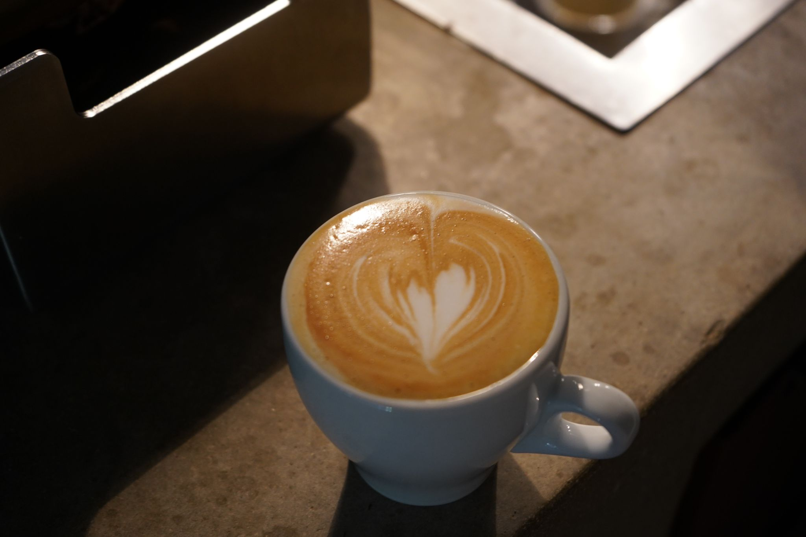

LOCAL AREA / 01
Around the cornerDirections ↗
04.A / Personal notebook
Coffee places to drink good coffee.[1]

[1] With a nod to Ariel Rubinstein’s Atlas of Cafés Where One Can Think, where inclusion is “orthogonal to the quality of the coffee.” My modest extension: coffee quality enters the objective function. Thinking remains very welcome.